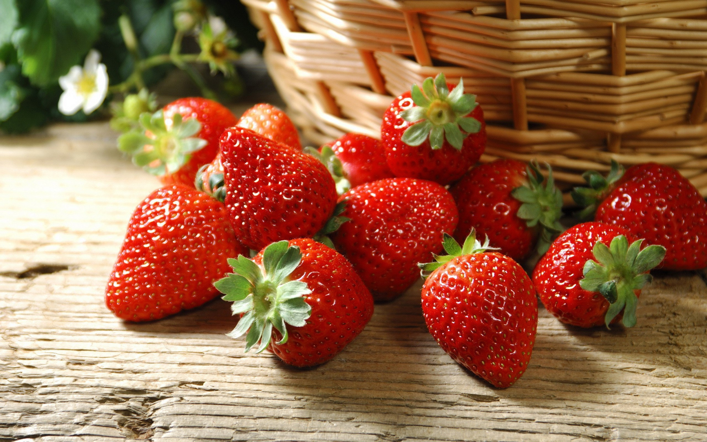
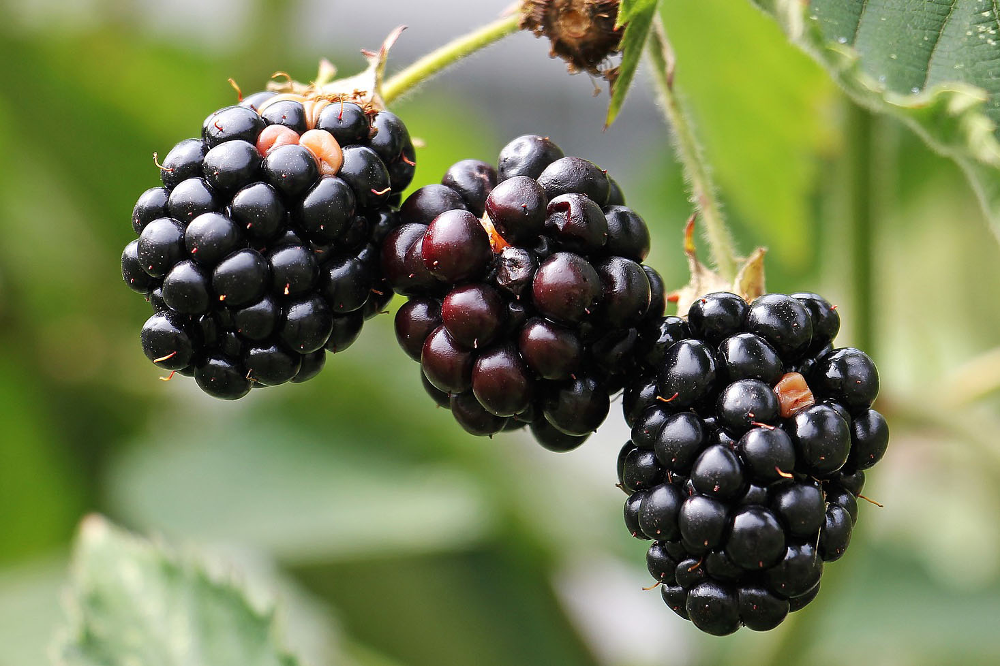
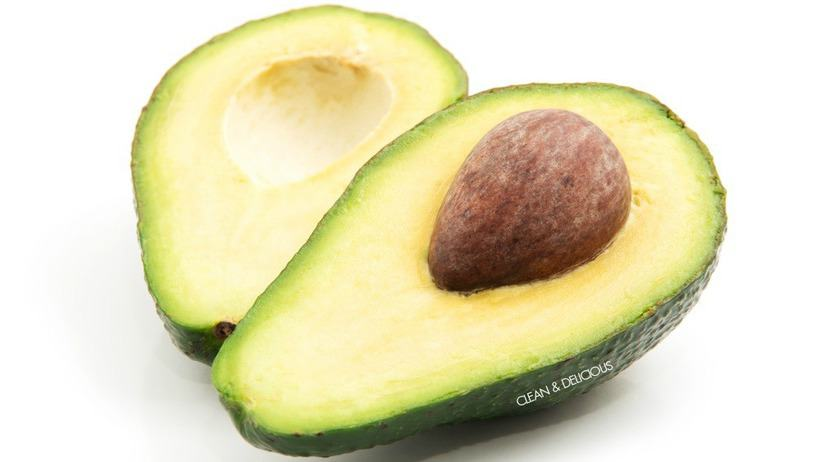

| 1 |
Lemon |
Vitamin C |
- Lemon juice helps keep your digestive system healthy
- Skin
- Hair
|
 |
| 2 |
Strawberries |
vitamins B-6, Vitamin C, A and K |
- For healthy digestion and reduction of body fat
- Develops bone health
- Esophageal protects against cancer
- Heart disease is reduced
- Useful in hypertension
|
 |
| 3 |
Orange |
Vitamin C |
- Lowers the risk of cancer
- Controls blood sugar level
- Lowers cholesterol
- Keeps blood pressure under check
- Prevents skin damage
|
|
| 4 |
Lime |
Vitamin C |
- Could promote healthy skin
- boost immunity
- Good source of antioxidants
|
|
| 5 |
Grapefruit |
Vitamin C |
- Reduces Acidity
- Increases Metabolism and Weight Loss
- Lowers Stroke Risk
- Boosts Vitality
- Builds Stronger Bones
|
 |
| 6 |
Blackberry |
Vitamin C and K |
- Source of fiber
- Brain functioning
- Prevents cancer
|
 |
| 7 |
Apple |
Vitamin C,vitamins A, E, B1, B2, and B6 |
- Apples May Be Good for Weight Loss
- Apples Contain Compounds That Can Help Fight Asthma
- Bone Health
|
|
| 8 |
Pomegranate |
Vitamin A,C and E |
- Protects us from free radicals
- It thins your blood
- Prevention of atherosclerosis
- It acts like an oxygen mask
- It prevents arthritis
|
|
| 9 |
Pinapple |
Vitamin A and K |
- Loaded With Nutrients
- Contains Disease-Fighting Antioxidants
- Its Enzymes Can Ease Digestion
|
|
| 10 |
Banana |
Vitamin C |
- Helps Fight Anaemia
- High Source Of Potassium
- Blood Pressure
|
 |
| 11 |
Avocado |
vitamins C, E, K |
- Healthy for the heart
- Great for vision
- Osteoporosis prevention
- Healthy babies
- Lower risk of depression
|
 |
| 12 |
Blueberries |
Vitamin K and C |
- Make the brain more efficient
- Battle cancer
- Improve digestion
- Let your skin glow
- Help with weight loss
|
|